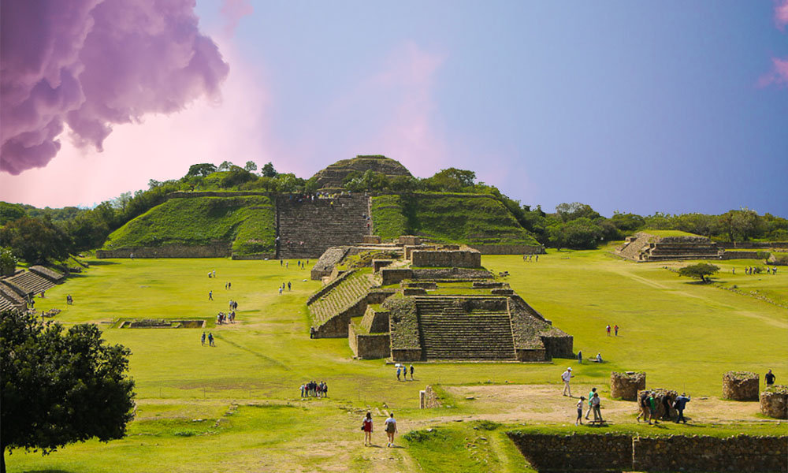

Monte Albán
Oaxaca
Monte Albán es una antigua ciudad prehispánica ubicada en el estado de Oaxaca, México. Fue construida por los zapotecas entre los siglos V y VI a.C. y llegó a ser una de las ciudades más importantes de Mesoamérica.
La ciudad se encuentra en una montaña a unos 400 metros sobre el nivel del valle de Oaxaca y está rodeada por una serie de terrazas y muros. Fue diseñada para controlar y proteger la región, y se convirtió en un importante centro religioso, político y cultural.
Uno de los aspectos más impresionantes de Monte Albán son sus enormes plataformas ceremoniales, las cuales se encuentran en la cima de la montaña y ofrecen una vista impresionante del valle. Estas plataformas están cubiertas de hermosas esculturas y relieves, que representan figuras humanas y animales, así como también símbolos religiosos.
Otro elemento destacado de Monte Albán son sus impresionantes tumbas de los gobernantes zapotecas, que se encuentran en la cima de la montaña y están talladas en la roca. Estas tumbas contienen artefactos y ofrendas funerarias que proporcionan una visión fascinante de la cultura y la religión zapoteca.
Monte Albán también es conocida por su sistema de escritura jeroglífica, que fue utilizado por los zapotecas para registrar su historia y su cultura. Aunque gran parte de su significado se ha perdido, los arqueólogos continúan trabajando para descifrar los jeroglíficos y comprender mejor la cultura zapoteca.
La visita a Monte Albán es una experiencia única y fascinante para los amantes de la historia y la arqueología. La belleza de sus estructuras y la riqueza de su legado histórico y cultural la hacen una parada obligatoria en cualquier viaje a Oaxaca.